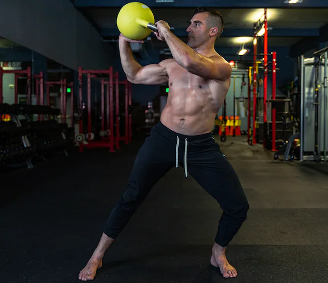

B243 · The Best Kettlebell Rotational Movement to Develop Athleticism
Hi {first_name},
This week, I'm bringing you yet another one of my favorite kettlebell exercises. This one in particular is a single kettlebell exercise that incorporates rotation and lateral movement - the Kettlebell Countered Sling Shot.
Click here to watch the full tutorial video
Training rotational movements is critical if we wish for our athleticism to be expressed at higher levels. When you know how and when to perform rotational movements in your workouts, you’ll be able to accomplish more of a total body training effect, all while doing less.
 The Kettlebell Countered Sling Shot draws on elements inspired by the Classic Sling Shot, and now incorporates additional rotational and lateral components. Also, this movement can be effectively done at different ranges as I demonstrate in the tutorial here for greater accuracy and precision.
In this week’s Youtube video, I break down this movement in 4 Progressions as well as discuss and demonstrate the inspiration for it - the Bulgarian Bag.
Click here to watch the complete 8-minute video and start incorporating this movement, or any of its regressions, into your training today. The Countered Sling Shot is set up to enhance athleticism as opposed to make you more rigid and diminish it. I hope you love it!
Stay strong,
Mike
P.S. Each week I’ll be bringing you a new video chalked full of practical, high level education you can use to increase your performance with the theme of being more efficient with your training.
Did you get a chance to check out last week's Youtube tutorial video on the Double Kettlebell Gorilla Clean? In case you missed it, click here.
Also, please subscribe to my Youtube channel so you can get weekly free content that will leave you looking, feeling, and performing on another level!
|